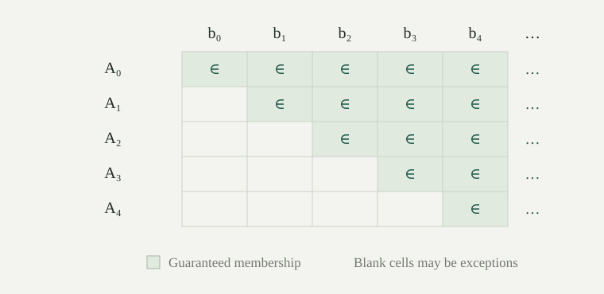

Throughout, \(\mathbb N=\{0,1,2,\ldots\}\). For subsets \(A,B\subseteq\mathbb N\), write \(A\subseteq^*B\) when \(A\setminus B\) is finite, and say that \(A\) is almost contained in \(B\). Equivalently, there is \(N\in\mathbb N\) such that every \(n\in A\) with \(n\ge N\) belongs to \(B\). A finite exceptional set is bounded; conversely, a bounded subset of \(\mathbb N\) is finite.
Every finite set is almost contained in every set, including the empty set. Also \(\mathbb N\subseteq^*B\) exactly when \(B\) is cofinite. This extends the idea of ignoring finitely many points used in the cofinite filter.
The relation \(\subseteq^*\) is a preorder: it is reflexive and transitive. Write \(A=^*B\) when their symmetric difference \((A\setminus B)\cup(B\setminus A)\) is finite. This is equivalent to having both \(A\subseteq^*B\) and \(B\subseteq^*A\), and it is an equivalence relation.
Proof
Reflexivity follows from \(A\setminus A=\varnothing\). If \(A\subseteq^*B\) and \(B\subseteq^*C\), then \(A\setminus C\subseteq(A\setminus B)\cup(B\setminus C)\), so the difference is finite. The characterization of \(=^*\) follows because a union of two sets is finite exactly when both are finite. Reflexivity, symmetry, and transitivity of \(=^*\) now follow from the corresponding almost containments. □
Antisymmetry fails: the even numbers and the even numbers together with \(1\) are different sets, but each is almost contained in the other.
A family \(\mathcal A\subseteq\mathcal P(\mathbb N)\) has the strong finite intersection property if the intersection of every finite subfamily is infinite. The empty intersection is \(\mathbb N\). This strengthens the finite intersection property, which asks only for nonempty intersections.
An infinite pseudointersection of \(\mathcal A\) is an infinite set \(B\subseteq\mathbb N\) such that \(B\subseteq^*A\) for every \(A\in\mathcal A\). We will shorten this to “pseudointersection”; infinitude is part of the convention.
A pseudointersection forces the strong finite intersection property. For a finite subfamily \(\mathcal E\), the set \(B\setminus\bigcap\mathcal E\) is the finite union \(\bigcup_{A\in\mathcal E}(B\setminus A)\). Removing it from infinite \(B\) leaves infinitely many points in \(\bigcap\mathcal E\). Indeed, removing a finite set from an infinite set cannot leave a finite set, since then the original set would be a union of two finite sets.
Every countable family \(\mathcal A\subseteq\mathcal P(\mathbb N)\) with the strong finite intersection property has an infinite pseudointersection.
Proof
If \(\mathcal A\) is empty, use \(B=\mathbb N\). Otherwise, take a list \(A_0,A_1,\ldots\) containing all its members; repetitions are allowed, so this also handles finite nonempty families. Put \(F_n=\bigcap_{i\le n}A_i\). Every \(F_n\) is infinite.
Let \(b_0\) be the least member of \(F_0\). Having defined \(b_n\), let \(b_{n+1}\) be the least member of \(F_{n+1}\) greater than \(b_n\). Such a member exists because an infinite subset of the naturals is unbounded. Recursion produces a strictly increasing sequence, so \(B=\{b_n:n\in\mathbb N\}\) is infinite.
For a fixed \(i\), every \(n\ge i\) satisfies \(b_n\in F_n\subseteq A_i\). Consequently
The right side is empty when \(i=0\), and finite in every case. Thus \(B\subseteq^*A_i\) for all \(i\). □
The construction uses least natural numbers and recursion, so it requires no axiom of choice. At stage \(n\), it satisfies requirements through index \(n\), including the current one.

For the tails \(T_n=\{m:m\ge n\}\), the intersection of all \(T_n\) is empty. Do they have a pseudointersection? Could the theorem instead assume that each member is infinite and every finite intersection is merely nonempty?
The set \(\mathbb N\) itself is a pseudointersection of the tails: \(\mathbb N\setminus T_n=\{m\in\mathbb N:m<n\}\) is finite. An empty exact intersection is therefore no obstruction.
The weaker hypothesis is insufficient. Let \(E\) and \(O\) be the even and odd numbers. Both \(E\cup\{1\}\) and \(O\) are infinite, but their intersection is \(\{1\}\). If \(B\) were almost contained in both, then all of \(B\) except a finite union of exceptions would lie in \(\{1\}\). This would make \(B\) finite.
For functions \(f,g:\mathbb N\to\mathbb N\), write \(f\le^*g\) if \(f(n)\le g(n)\) for all sufficiently large \(n\). Write \(f<^*g\) if \(f(n)<g(n)\) for all sufficiently large \(n\). The first relation is called eventual domination; the second requires strict eventual inequality.
The threshold can depend on the pair of functions. The relation \(\le^*\) is reflexive and transitive: for transitivity, take the larger of two thresholds. Two functions that differ only at finitely many inputs can dominate one another without being equal.
For every countable family \(\mathcal F\subseteq\mathbb N^{\mathbb N}\), there is \(g:\mathbb N\to\mathbb N\) such that \(f<^*g\) for every \(f\in\mathcal F\).
Proof
For the empty family, use \(g(n)=0\). Otherwise list its members as \(f_0,f_1,\ldots\), allowing repetitions, and define
The maximum exists because its set of indices is finite and nonempty. For fixed \(i\) and every \(n\ge i\), the maximum includes \(f_i(n)\), giving \(f_i(n)<g(n)\). Thus \(f_i<^*g\). □
As in the pseudointersection construction, stage \(n\) attends to the first \(n+1\) requirements. The added \(1\) ensures strict inequality, even when all listed functions are zero. This construction also needs no choice.
Consider the constant functions \(f_i(n)=i\). Can one function bound them all pointwise? Is there a function eventually dominating every member of \(\mathbb N^{\mathbb N}\)?
A pointwise bound is impossible: at input \(0\), its finite value \(g(0)\) would have to be at least every natural number. Yet \(g(n)=n+1\) eventually strictly exceeds each constant \(i\); a threshold is \(i\). There need not be one threshold working for the whole family simultaneously.
Nor can any \(g\) eventually dominate all functions. The function \(h(n)=g(n)+1\) fails \(h\le^*g\) at every input. The countability hypothesis in cannot simply be dropped.
A base for a filter \(\mathcal U\) on \(\mathbb N\) is a family \(\mathcal B\subseteq\mathcal U\) such that every \(S\in\mathcal U\) contains some \(A\in\mathcal B\). Here containment is ordinary containment \(A\subseteq S\), not almost containment.
The tails \(T_n\) form a countable base for the cofinite filter, because every cofinite set contains a tail. For the point ultrafilter at \(k\), the one-member family \(\{\{k\}\}\) is a base. Nonprincipal ultrafilters behave differently.
If \(\mathcal U\) is a nonprincipal ultrafilter on \(\mathbb N\), no countable family is a base for \(\mathcal U\).
Proof
Suppose \(\mathcal B\) were a countable base. Each finite intersection of its members belongs to \(\mathcal U\), and hence is infinite: a finite member would force principality. By , choose an infinite \(P\) almost contained in every base member. Enumerate \(P\) increasingly as \(p_0,p_1,\ldots\), and split it into two infinite sets \(C=\{p_{2n}:n\in\mathbb N\}\) and \(D=\{p_{2n+1}:n\in\mathbb N\}\).
The ultrafilter decision property puts either \(C\) or \(\mathbb N\setminus C\) in \(\mathcal U\). In the first case, some base member \(A\) lies inside \(C\). Since \(P\subseteq^*A\), the set \(D\subseteq P\setminus A\) would be finite. In the second case, a base member \(A\subseteq\mathbb N\setminus C\) makes \(C\subseteq P\setminus A\) finite. Both contradict the split. □
The proof does not assert that \(P\) belongs to \(\mathcal U\). It proves an obstruction for any supplied nonprincipal ultrafilter without choice; existence of such an ultrafilter is a separate result proved there assuming choice.